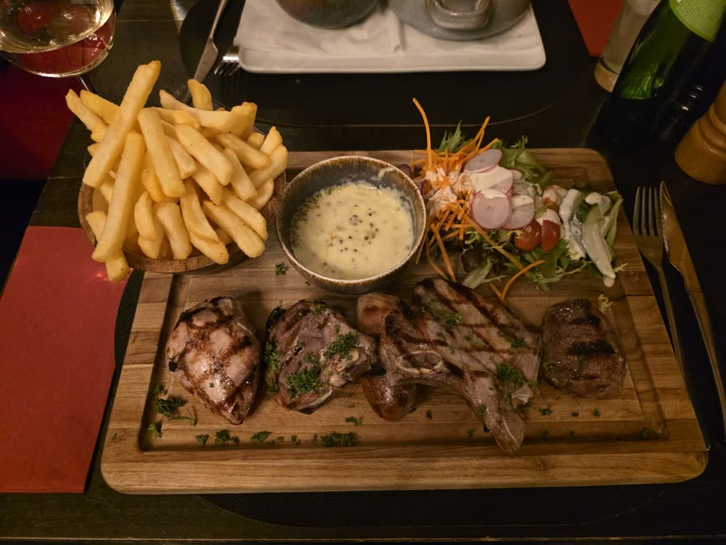
Gemengde grill
Gegrild vlees op een plank, met frietjes, saus en salade.
Café-restaurant aan de Grote Markt
Steak, grill, vis, pasta en burgers, midden in Blankenberge, met een ruim terras en parking voor de deur.
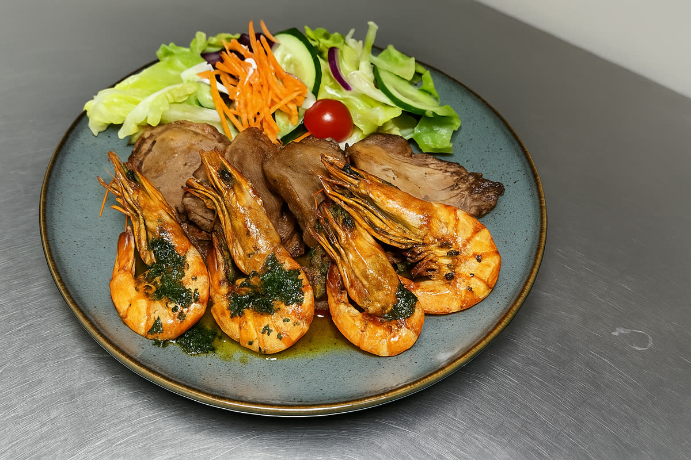
Een keuken voor een volledige maaltijd, met vlees, vis, pasta en burgers, en iets zoets om af te sluiten.

Gegrild vlees op een plank, met frietjes, saus en salade.
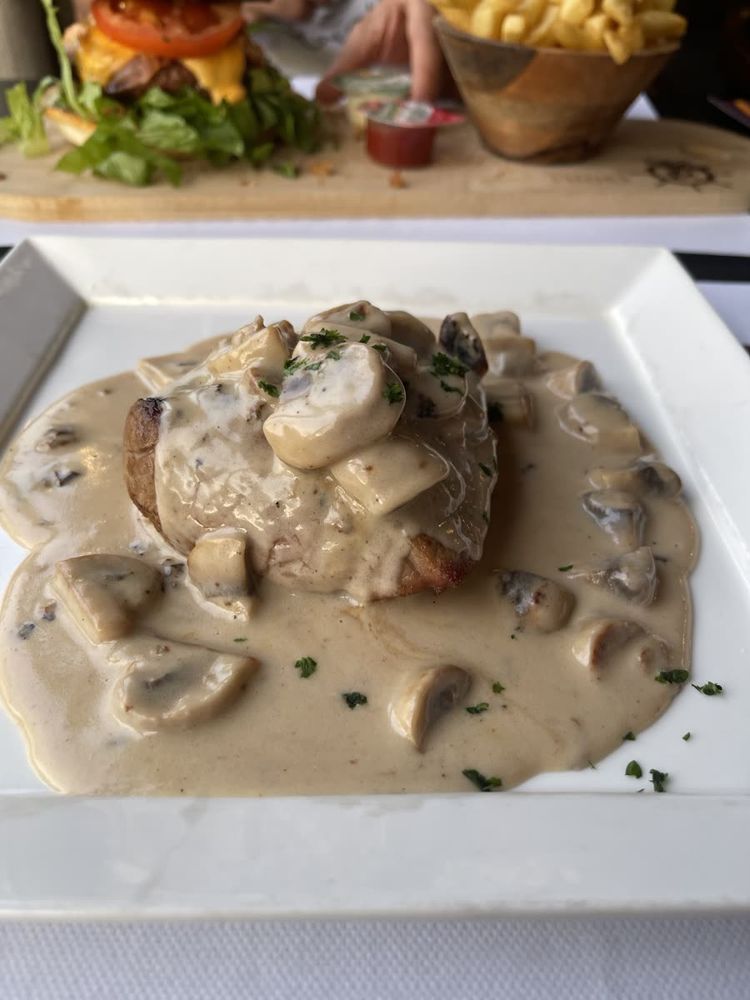
Met een romige champignonsaus, zoals de vaste gasten hem bestellen.
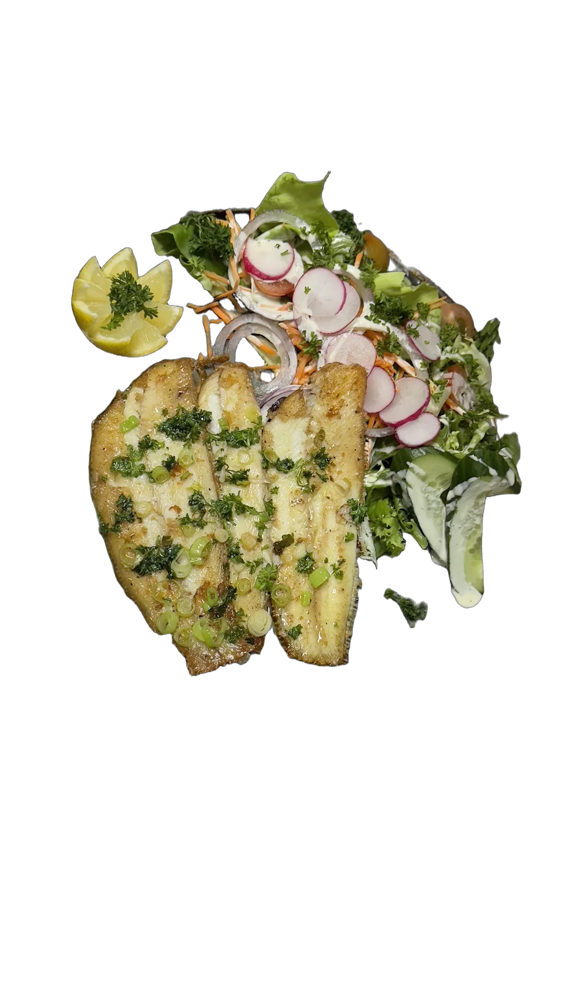
Gebakken vis met kruiden, citroen en salade.
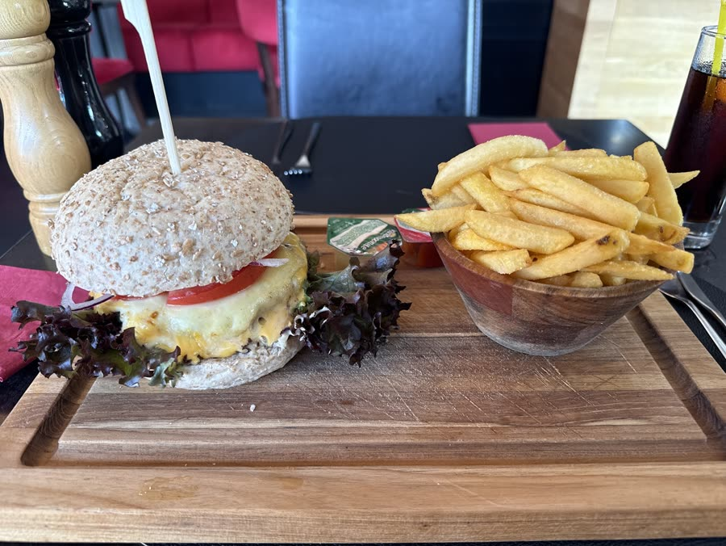
Met kaas en frietjes, op een houten plank.
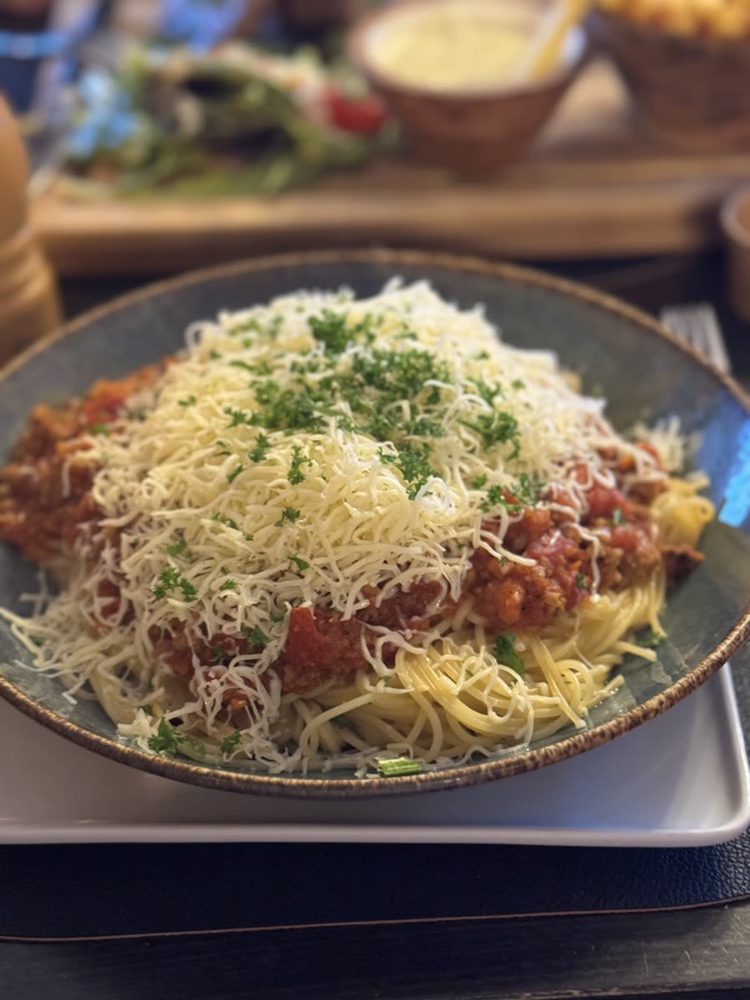
Met saus en veel geraspte kaas.
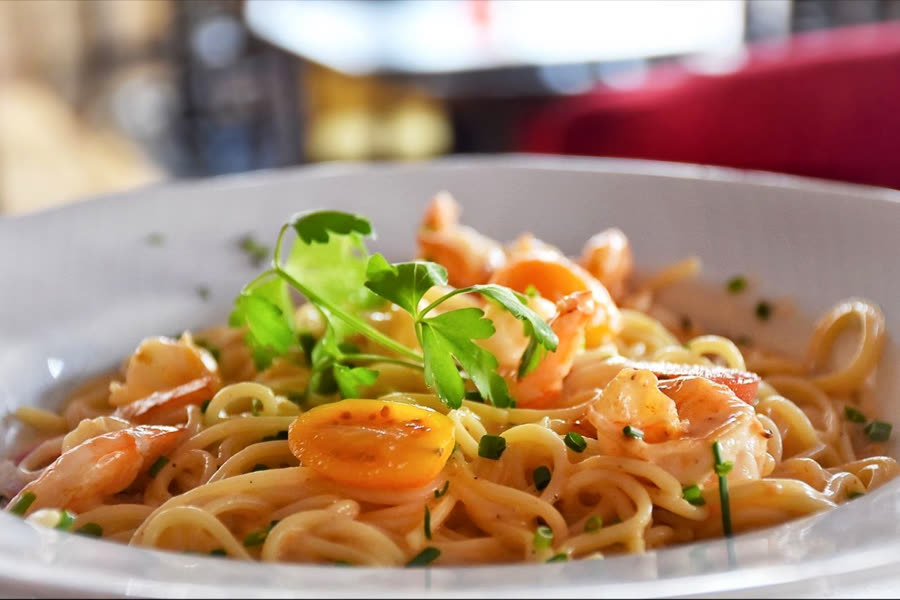
Verse pasta met tomaat en scampi.
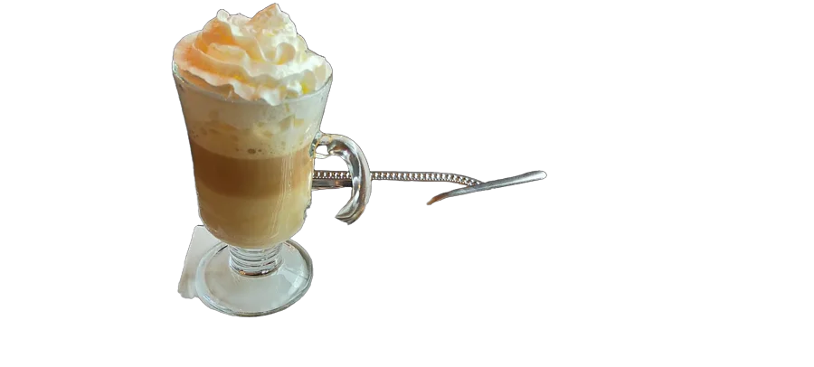
In een hoog glas, bij het dessert of tussendoor.
Vraag naar de volledige kaart en de dagsuggesties.
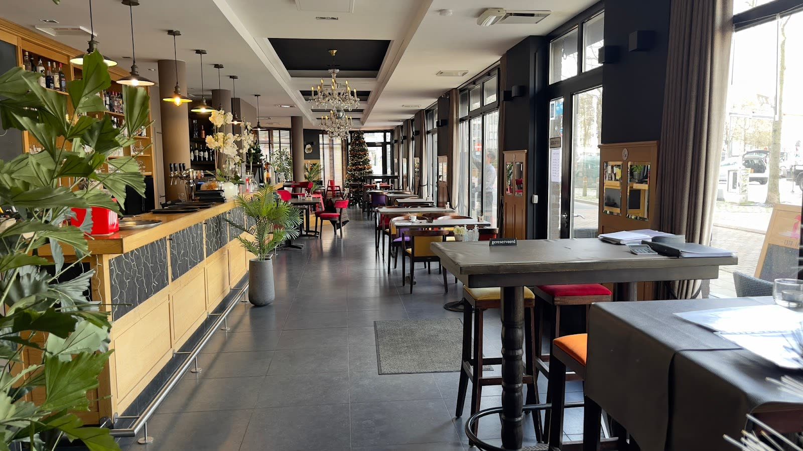
Op de Grote Markt, met de winkelstraten om de hoek en de dijk en het strand op wandelafstand. Binnen een lange, lichte zaal.
Het ideale adres om even te pauzeren tijdens uw verblijf aan zee. Centraal op de Grote Markt, met parking voor de deur en vriendelijke bediening.
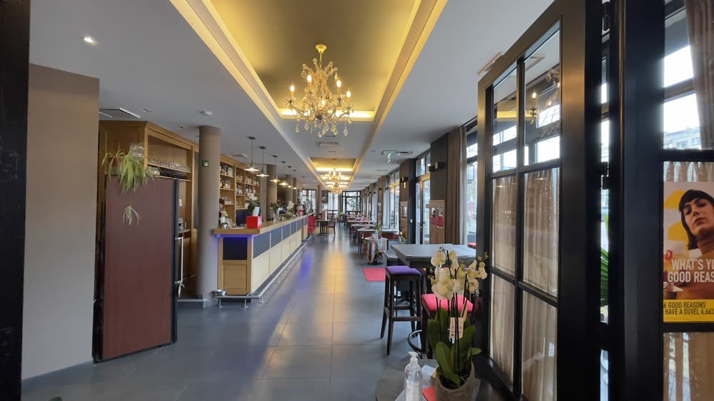
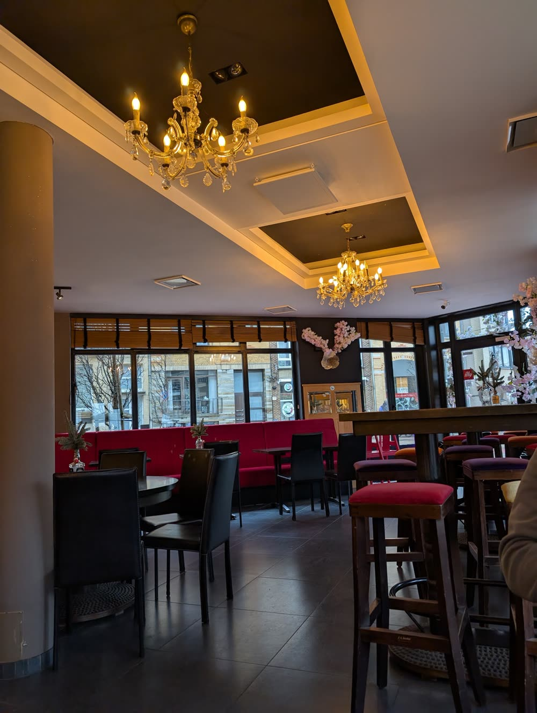
“Mooie locatie, zeer vriendelijke en klassevolle bediening, steak bleu-chaud perfect gebakken, stoofvlees smelt in de mond, frietjes lekker knapperig, goed rood huiswijntje. Zeer tevreden.”
“Heerlijk gegeten! De steak was perfect gebakken en heel erg mals. Vriendelijke en snelle bediening. Prijs-kwaliteit echt dik in orde.”
“Bij verblijf in B.berge is dit ons vast restaurant. Alles is top. Elk jaar komen wij hier meerdere keren terug.”
Grote Markt 31, 8370 Blankenberge
+32 486 85 65 41
Zondag gesloten. Voor groepen en grote gezelschappen: bel even.